Cássio VillerOrçamento · gestão de obra · sistemas para construtorasSão José dos Campos/SP
Engenharia Civil · 7º semestreDisponível · presencial ou remoto
Cargo-alvo: Analista de orçamento, planejamento e custos · CLT ou PJ · São José dos Campos, presencial ou remoto
Cássio Viller
Orcei diversas obras; uma proposta de 328 m² saiu em 36 minutos.
Comecei pela contabilidade, não pela obra: folha, notas e balancete no escritório da família, desde 2017. Na obra, vi a mesma informação digitada cinco vezes. Construí sistemas em que ela entra uma vez e cada número guarda a origem.
Folha 01/08Orçamento por leitura de projeto · caso principalSet/2026
Fiz a proposta de 328 m² em 36 minutos, do zip ao PDF.
Entra o pacote do projeto; saem o levantamento medido no desenho, o orçamento com faixa e a proposta no modelo da empresa. Abaixo, um orçamento real, com o relógio na tela.
11:3536 min medidos12:11
O problema
Proposta de mão de obra em Light Steel Frame para a ampliação de uma unidade de saúde: 26 ambientes, 328 m². À mão — abrir pranchas, medir, transcrever, montar o PDF — leva cerca de 1 dia útil (estimativa), e no fim ninguém explica de onde saiu cada número.
O que fiz
Escrevi um método que inventaria o pacote, aponta o que falta, confere a escala contra as cotas, mede as paredes no desenho e roda a mesma planilha que o diretor usa.
Resultado
Proposta de mão de obra em LSF, assinável em 36 minutos, fechando ao centavo, com a origem e o grau de confiança de cada número; os cortes ausentes entraram como pendência declarada. Se o cliente muda o pé-direito, roda de novo e a proposta sai revisada.
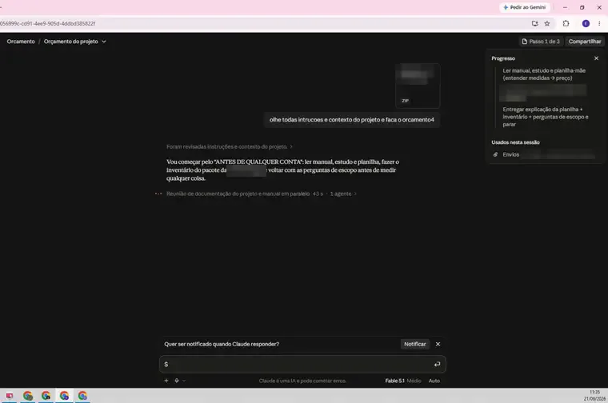
11:35Pacote enviado. Um zip com 8 arquivos: 3 pranchas de arquitetura, 3 de estrutura e a proposta de material da loja.
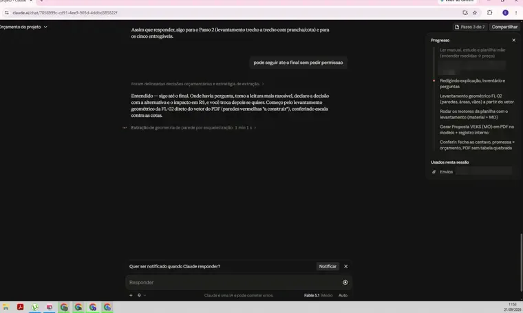
11:53Passo 3 de 7. Nove perguntas de escopo feitas e respondidas; as paredes a construir estão sendo extraídas direto do vetor da planta.
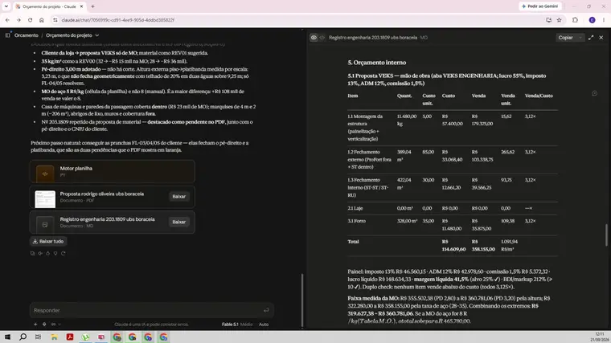
12:11Três entregáveis na tela: proposta comercial em PDF, registro de engenharia e o motor de cálculo. Fecha ao centavo.
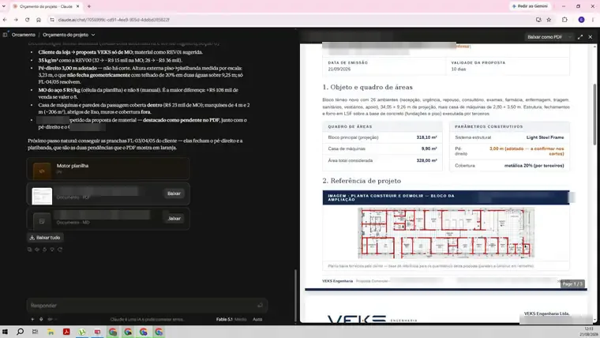
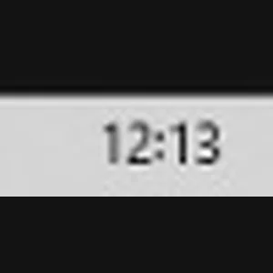
12:13Proposta aberta para revisão: quadro de áreas, parâmetros e a planta do cliente. O que ainda depende dele aparece em laranja.
Tempo até a proposta
Rotina manual — abrir pranchas, medir, transcrever, montar o PDF
~1 dia útil*
Este método — pacote entra, proposta sai
36 min
* Estimativa para uma proposta desse porte (26 ambientes, 328 m²) feita à mão na planilha padrão. Os 36 minutos são medidos: 11h35 → 12h11.
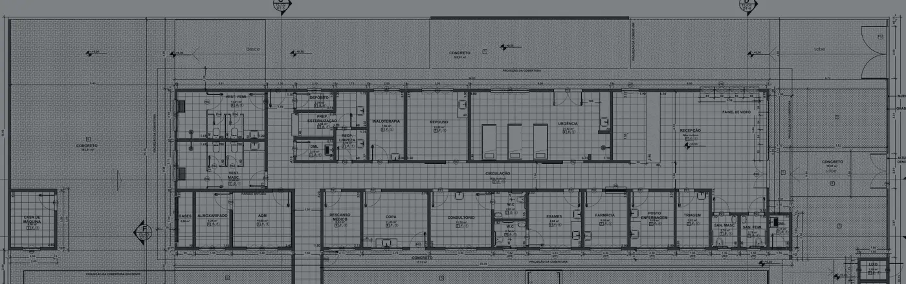
11:35As paredes em vermelho são medidas direto no desenho do cliente.
Maquete · as paredes da proposta sobem da planta enquanto o relógio anda de 11:35 a 12:11Ver os três entregáveis e as seis regras do método
Para o clienteProposta comercial
PDF no modelo da empresa: serviço, quantidade, preço, o que está incluso e o que é por conta dele. Sem custo, sem margem. Pendências destacadas em cor.
Para a empresaRegistro de engenharia
De onde veio cada número, com que confiança, a faixa medida, o custo, a margem e cada decisão numerada com "quanto custa se estiver errada".
Para a próxima rodadaMotor de cálculo
O cliente mudou o pé-direito ou tirou a casa de máquinas? Roda de novo e a proposta sai revisada, com a mesma procedência.
Por que dá para confiar num orçamento de 36 minutos
Seis regras que eu escrevi e o método obedece
01Todo número tem origem.
Medido no desenho, derivado por conta, paramétrico por índice ou ditado por alguém — sempre marcado, sempre com grau de confiança.
02A confiança se propaga pela pior.
Um total herda a pior confiança das parcelas. Medido × estimado = estimado.
03Baixa confiança vira faixa.
Nunca número seco. E a faixa se mede, recalculando com o extremo de cada premissa.
04Dado ausente é ausente.
Nunca zero. Um total com buraco dentro não é total — vira pendência declarada.
05Meça antes de concluir.
E meça antes de consertar. Se a conferência der efeito zero, escreve-se o zero.
06O que muda o que a empresa gasta, vende ou promete volta para o humano.
Com o número das duas alternativas na mão. O método recomenda; quem assina decide.
O caso. Ampliação de uma unidade de saúde no litoral paulista: bloco novo com 26 ambientes e 328 m² de projeção, proposta de mão de obra em Light Steel Frame. O método inventariou o pacote, apontou o que faltava (os cortes, que fecham o pé-direito), mediu a escala contra as cotas, extraiu as paredes do vetor e rodou os motores da planilha padrão da empresa — a mesma que o diretor usa.
Para cada número, o método registra de onde ele veio e com que confiança.
Orcei diversas obras, de R$ 29 mil a R$ 24,5 milhões.
Na VEKS, idealizei o sistema que recebe o que o cliente tem, mede a obra no próprio desenho, orça, programa o prazo e gera a proposta — e orcei diversas obras com ele.
R$ 29 mildiversas obras · SINAPI a 0,25%R$ 24,5 mi
O problema
O cliente chega com o que tem — prancha em PDF, modelo 3D de outro escritório, croqui fotografado pelo WhatsApp. O orçamentista passa dias medindo e digitando, e um item esquecido só aparece quando a obra já dá prejuízo.
O que fiz
Idealizei o sistema que lê o desenho, mede, orça, programa o prazo e gera a proposta. Dirigi o desenvolvimento, feito com assistentes de IA — as regras de engenharia e de negócio, os testes e a revisão são meus. E orcei as obras com ele.
Resultado
Diversas obras no sistema, de R$ 29 mil a R$ 24,5 milhões. Nos 19 serviços SINAPI conferidos, o sistema reproduz as composições com desvio máximo de 0,25%. A mesma obra sai em três tamanhos de proposta sem mover nenhum número.
R$ 24,5 mia maior obra no mesmo sistema; a menor, R$ 29 mil
0,25%desvio máximo ao reproduzir as composições SINAPI publicadas pela Caixa, nos 19 serviços conferidos
71 → 0menções a informação interna numa proposta de cliente, por verificação automática
11 sem.de 9/jul a 21/set/2026, do primeiro registro à obra mais recente no sistema
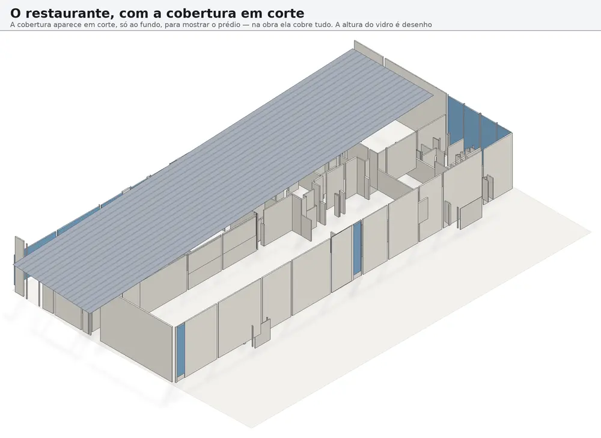
Rede de restaurantes de rodovia · sem nenhuma quantidade no pacote, o prédio foi medido no próprio arquivo do cliente — cobertura em corte
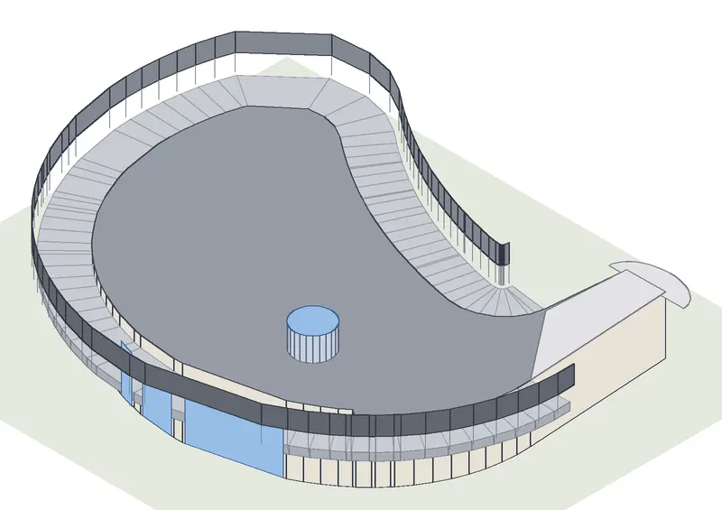
Ponto de venda em planta curva — a primeira obra sem uma parede reta
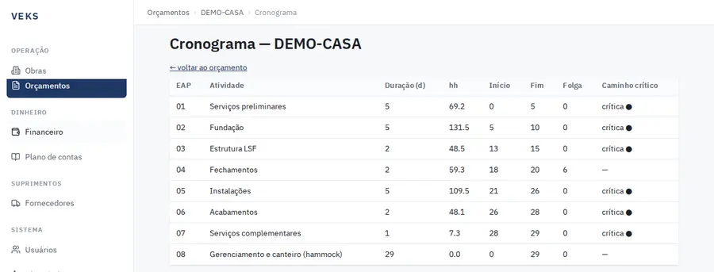
Cronograma: cada etapa com horas previstas e a marcação de quais atrasam a obra inteira
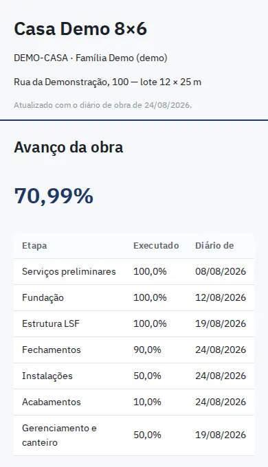
O portal do cliente deste sistema, em obra de demonstração: avanço por etapa, sem custo nem fornecedor
Do desenho ao preço, tela a tela
Oito telas do sistema, na ordem em que o orçamento acontece. São de uma casa de demonstração de 8 × 6 m, fotografadas num tour automático de 26/08/2026: os custos das obras reais são sigilosos.
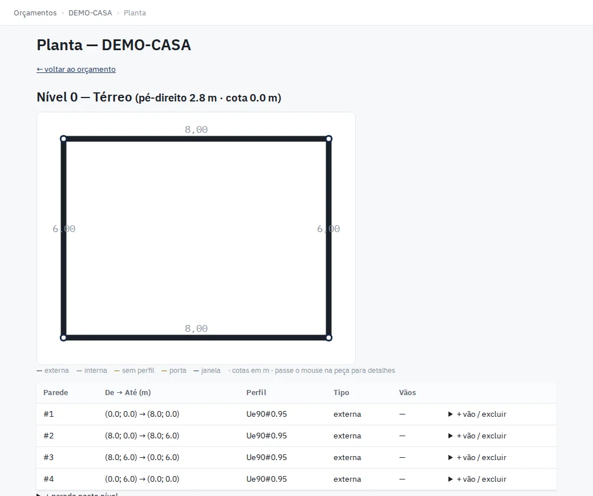
1 · O desenho vira planta medidaCada parede com início, fim e perfil. A planta pode ser desenhada na tela ou importada do DXF do arquiteto, e a escala é medida no desenho, nunca presumida.
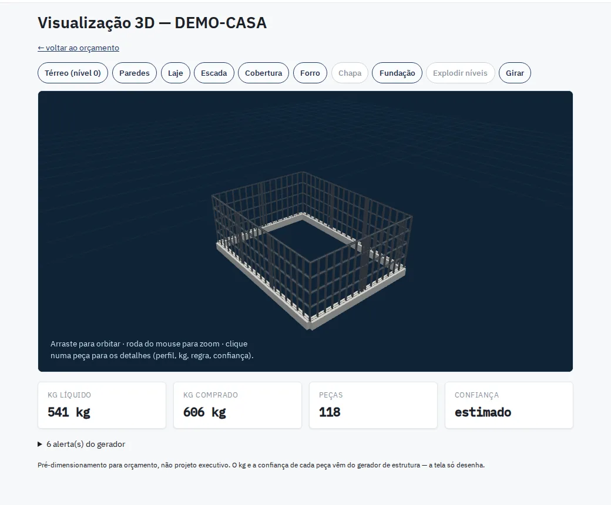
2 · Da planta sai a estrutura, peça por peça541 kg de aço líquido, 606 kg comprados, 118 peças. O peso sai da soma das peças, não de uma taxa por m². A tela avisa: pré-dimensionamento para orçamento, não projeto executivo.
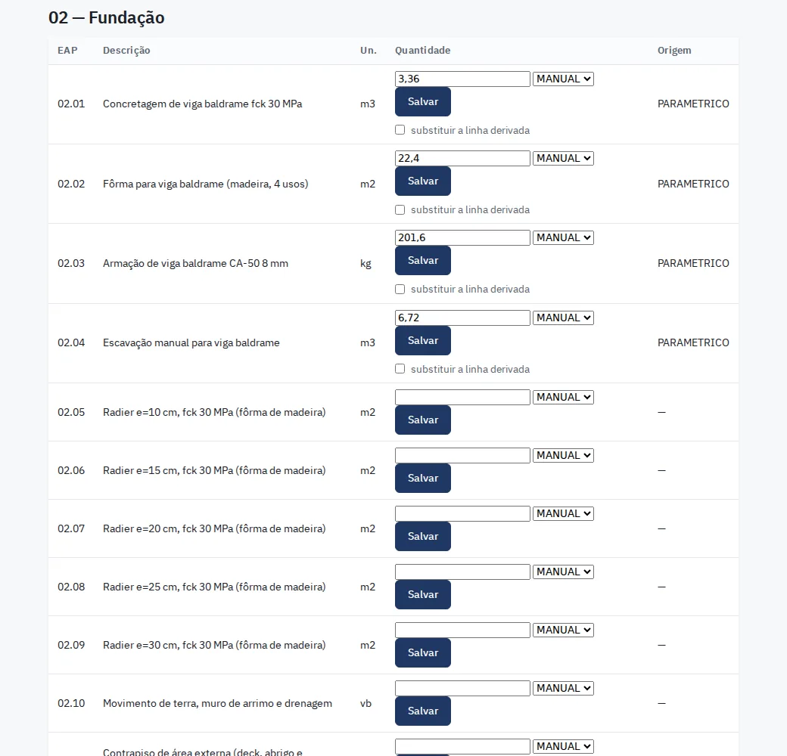
3 · Cada quantidade diz de onde veio"Parametrico" é calculada pelo sistema a partir da planta; "manual" foi lançada por alguém. Item sem quantidade fica em branco, nunca vira zero.
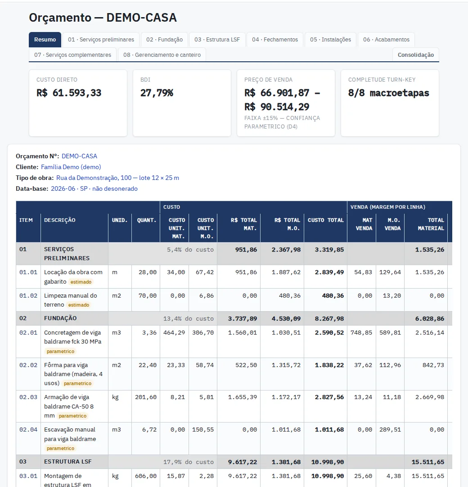
4 · O orçamento, com a fonte ao ladoCusto direto, BDI e preço de venda com faixa de ±15% porque a confiança é "paramétrico". Cada linha traz a etiqueta de origem do preço. Item sem preço bloqueia a proposta.
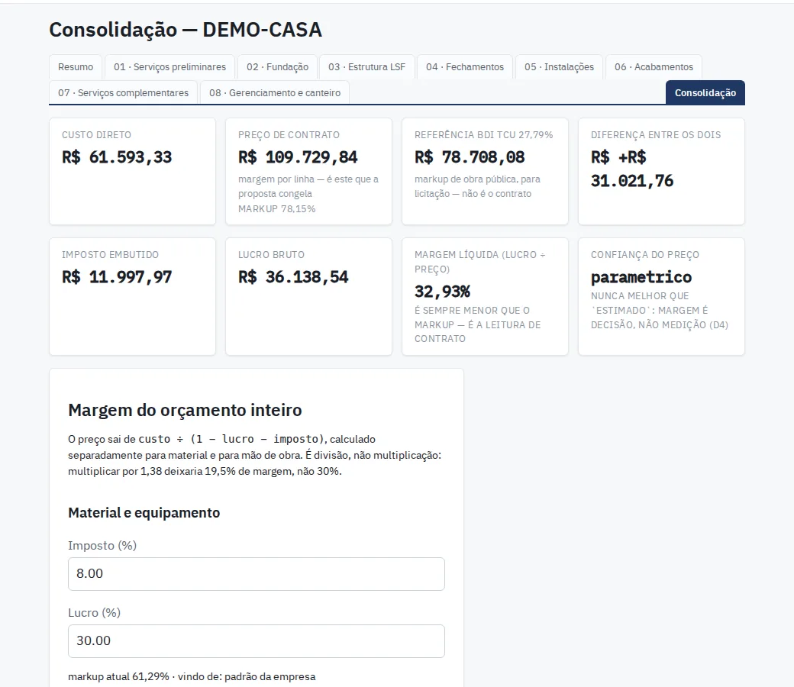
5 · O preço, escolhido e registradoMargem linha a linha e BDI do TCU lado a lado, com a diferença à vista. Material e mão de obra têm imposto e lucro separados, e o preço sai por divisão, não por multiplicação: multiplicar por 1,38 deixaria 19,5% de margem, não 30%.
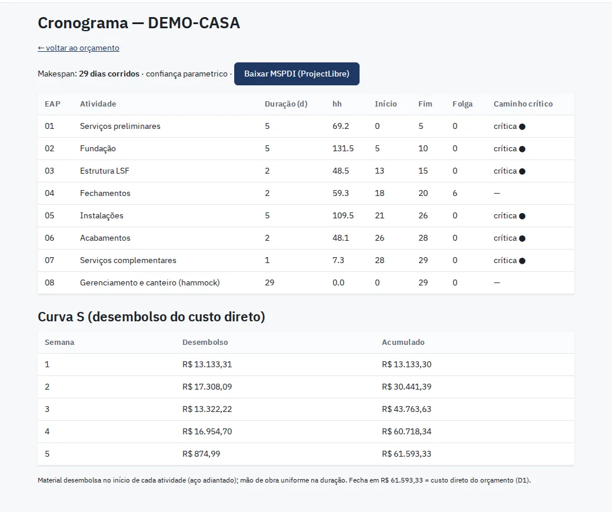
6 · O prazo pela sequência e pela equipe29 dias corridos, com as etapas que atrasam a obra inteira marcadas como críticas, e a curva S do desembolso, que fecha com o custo direto do orçamento. Exporta em MSPDI, o formato do MS Project e do ProjectLibre.
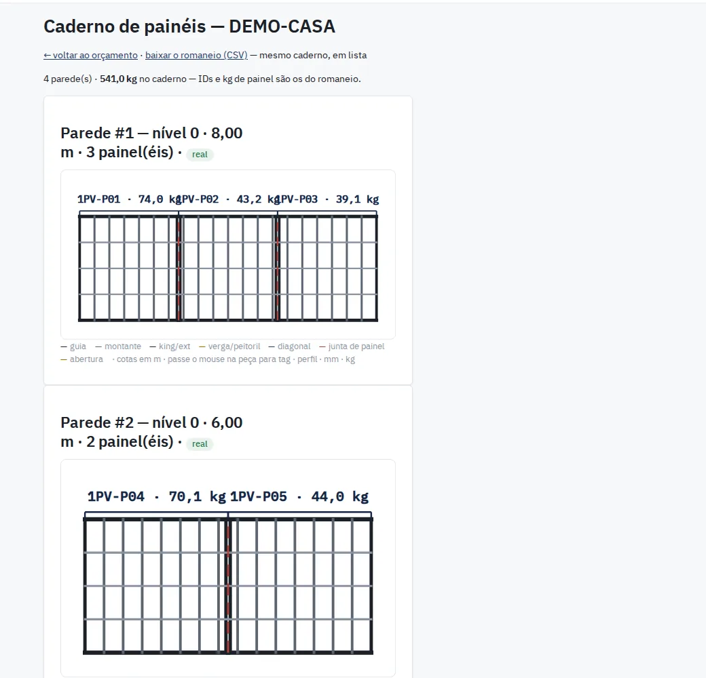
7 · A parede vira painel para a fábricaCada parede dividida em painéis transportáveis, com identificação e peso, e o romaneio em CSV para a linha de produção. É daqui que sai a lista de peças das casas modulares.
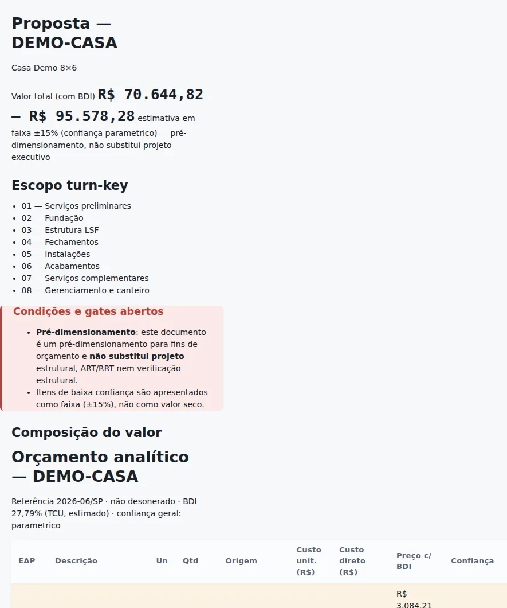
8 · A proposta, num link que o cliente abre sem senhaO conteúdo é congelado na publicação e o link pode ser revogado. As condições abertas ficam em destaque, e a verificação automática não deixa sair o que é interno da empresa.
Depois da proposta: compras e custo da obra
A mesma casa de demonstração, já como obra.
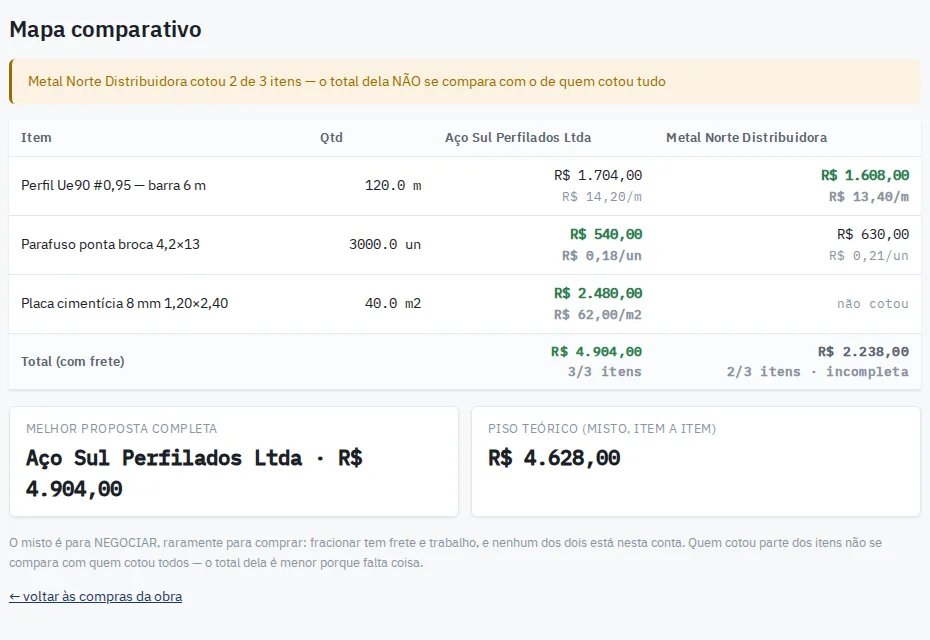
9 · Cotação que não enganaQuem cotou só parte dos itens não entra na comparação do total — o sistema avisa. O piso item a item aparece como argumento para negociar, não como compra.
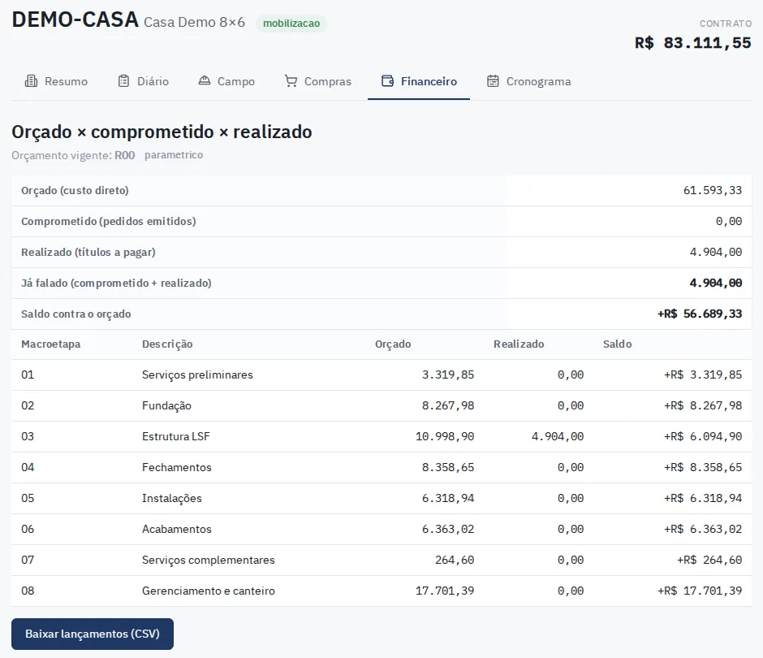
10 · Orçado × comprometido × realizadoO custo direto do orçamento vira a linha de base da obra. Cada compra recebida baixa o saldo da macroetapa certa, e a medição sai do diário validado.
Três obras reais orçadas no sistema
01
Redesenhei a casa para caber no teto de R$ 500 mil
+
Resultado. R$ 452.865 e 54 dias de obra, com folga de R$ 47 mil abaixo do teto.
Desafio. A casa chegou como croqui à mão, fotografado pelo WhatsApp. Orçada, fechou em R$ 1,18 milhão. O cliente pôs um teto de R$ 500 mil.
O que fiz. Mostrei com o sistema, em números, que trocar materiais por opções mais baratas tirava só 15% — não bastava. Então redesenhei a casa que cabia no teto, com 93,5 m² fechados, e recalculei tudo pelas mesmas regras. Precifiquei um a um cada acréscimo que o cliente poderia querer de volta (varanda, garagem, pé-direito maior), para ele escolher com o valor à vista.
R$ 24,5 milhões medidos no desenho, sem quantidades do cliente
+
Resultado. Uma proposta de obra completa de R$ 24,5 milhões. Quando a direção mudou o papel da empresa, de construtora para subempreiteira, gerei uma segunda revisão, de R$ 9,6 milhões, e mantive a primeira intacta para comparação.
Desafio. Restaurante, plataforma de ônibus e posto de estrada para uma rede de rodovia. O cliente entregou um desenho de 756 MB e documentos de referência, sem uma única quantidade e sem um único preço. O documento mais completo do pacote era a proposta de um concorrente.
O que fiz. Medi com o sistema, no próprio desenho, as paredes e as coberturas da obra inteira. Onde o desenho não bastava — o posto, que não vinha desenhado —, montei o projeto a partir da implantação do memorial e o fiz entrar pelo mesmo caminho, declarado como estimativa. Saíram orçamento, prazo e três propostas de tamanhos diferentes.
03
71 → 0 menções internas numa proposta de R$ 964.917
+
Resultado. Uma proposta de R$ 964.917 em três versões, de 4, 11 e 18 páginas, geradas do mesmo dado. A verificação automática levou as menções a informação interna de 71 para 0.
Desafio. Fechamentos internos de cinco prédios de um centro logístico, com um documento de contratação cheio de regras sobre o que devia estar dentro do preço por metro quadrado.
O que fiz. Li com o sistema as regras do documento do cliente, guardando a frase exata de cada uma, e pus dentro do preço o que ele mandava incluir. Por decisão da direção, trouxe também os 12 itens que o documento deixava por conta do cliente, cada um medido. A proposta passou por cinco refinamentos — uma página por prédio, retirada de dado sensível, vistas 3D, versão compacta e versão curta — e em nenhum deles o preço se moveu um centavo sem decisão.
Ver como o sistema chega ao preço — 1 m² de parede de drywall, do começo ao fim
Um exemplo do começo ao fim: 1 m² de parede de drywall
Todos os números abaixo foram calculados pelo sistema, não digitados. O serviço vem da tabela oficial da Caixa, com preços de junho de 2026 em São Paulo.
Material, por m²
Placa de gesso, nas duas faces
2,11 m²
R$ 43,55
Montante (perfil vertical de aço)
2,91 m
R$ 19,20
Guia (perfil no piso e no teto)
0,91 m
R$ 5,30
Fita e massa para as juntas
3,30 m · 1,10 kg
R$ 7,00
Parafusos e pinos de fixação
20,7 + 3,0 un
R$ 3,53
Subtotal de material
R$ 78,58
Mão de obra, por m²
Montador
0,595 h × R$ 35,62
R$ 21,20
Ajudante
0,195 h × R$ 32,19
R$ 6,28
Subtotal de mão de obra
R$ 27,47
Conferência
R$ 106,05 de custo por m². A mesma parede vale R$ 106,00 na tabela publicada pela Caixa: cinco centavos de diferença — e é essa conferência que o sistema faz serviço a serviço, recusando a importação acima de 1% de desvio.
Do custo ao preço
Material e mão de obra recebem margens diferentes, porque imposto e risco são diferentes. Para que a margem seja mesmo a fração prometida do preço final, o sistema divide o custo pelo que sobra depois da margem, em vez de somar percentual em cima. As margens das obras reais são da empresa e não aparecem aqui — as da casa de demonstração, sim.
E o prazo
Uma parede de 100 m² pede 80,1 horas de equipe. Com um montador e um ajudante em jornada de 8 h, o sistema programa 6 dias — a conta dá 5,01 e ele arredonda para cima. Número sem fonte firme sai com faixa; item sem preço impede a proposta de sair.
Medido e pendente
O que está medido — e o que ainda falta
Medido
Nos 19 serviços SINAPI conferidos, reproduz as composições com desvio máximo de 0,25%. Contra a calculadora que a empresa usava antes, 0,00% — o que mostra que repete a mesma conta, não que acerta o custo de obra pronta.
Mesma obra em três tamanhos de proposta, do mesmo dado, sem mover nenhum número.
Toda obra passa pelo mesmo caminho — ler, medir, orçar, programar, propor — com guia escrito para um colega repetir.
O sistema confere a si mesmo: foi assim que apareceram e foram corrigidos um serviço 25,9% abaixo do oficial e um prazo lido ao pé da letra que dava 234 dias para uma obra de 49.
Ainda falta
Publicar no servidor definitivo — a hospedagem foi ensaiada duas vezes com sucesso.
Confrontar um orçamento com o custo final de uma obra concluída — a empresa ainda não tem esse histórico.
Os valores são propostas, não contratos assinados.
Folha 03/08SIGE · portal do cliente e diário de obraMai–Set/2026
Um link por obra: 65 diários e 378 fotos para o cliente.
Cada obra ganha um endereço próprio, que a construtora liga e desliga. Quem paga a obra abre no celular, sem conta e sem instalar nada, e vê o andamento, o cronograma e o diário de cada dia com as fotos da equipe — e confirma que leu, com senha e recibo. Por trás do link está o SIGE, o sistema de gestão que concebi e construí, hoje em uso numa empresa de Light Steel Frame.
O SIGE é um sistema diferente do sistema de orçamento da folha anterior: ele cuida da obra depois da venda e é o que roda numa obra real.
1 link por obra65 diários · 378 fotos (cópia)27,6% → 44,7%
O problema
Quem paga a obra pergunta por telefone e recebe uma resposta montada à mão a cada vez. O diário fica no grupo de WhatsApp, sem ligação com o cronograma. E diário que o cliente não confirmou que leu não serve de registro.
O que fiz
Fiz do portal a porta de saída de tudo o que o sistema registra: o diário que o encarregado preenche move o cronograma, e o portal mostra os dois — o percentual da obra, as etapas e cada dia com foto. O representante do cliente dá ciência com uma senha só dele e recebe um recibo; se o diário mudar depois, a ciência passa a aparecer como "alterado".
Resultado
Numa obra de galpões em LSF, lida numa cópia do sistema com os dados reais: 65 diários, 378 fotos e 109 etapas num único link. E o portal mostrou o que as mensagens escondiam: sem 23 dias que estavam só no WhatsApp, marcava 27,6% concluído; com eles, 44,7%, contra 60,8% planejado. A carga desses 23 dias ainda não foi aplicada no sistema em uso.
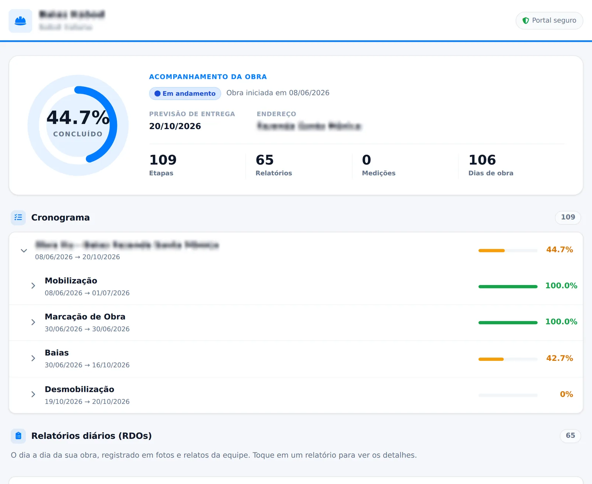
O portal da obra (cópia do sistema, com a carga dos 23 dias): percentual concluído, o cronograma por etapa e, abaixo, os 65 diários com foto. A data de entrega no topo não é previsão calculada pelo sistema: com 44,7% feito contra 60,8% planejado, não deve ser lida como estimativa. Nome da obra e do cliente ocultados.
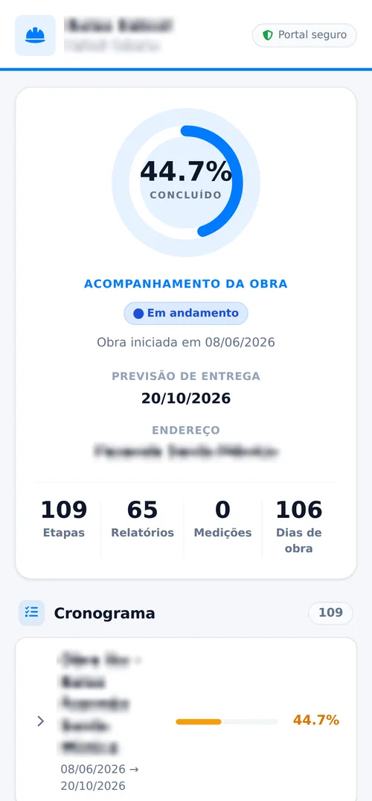
No celular, onde o cliente está.
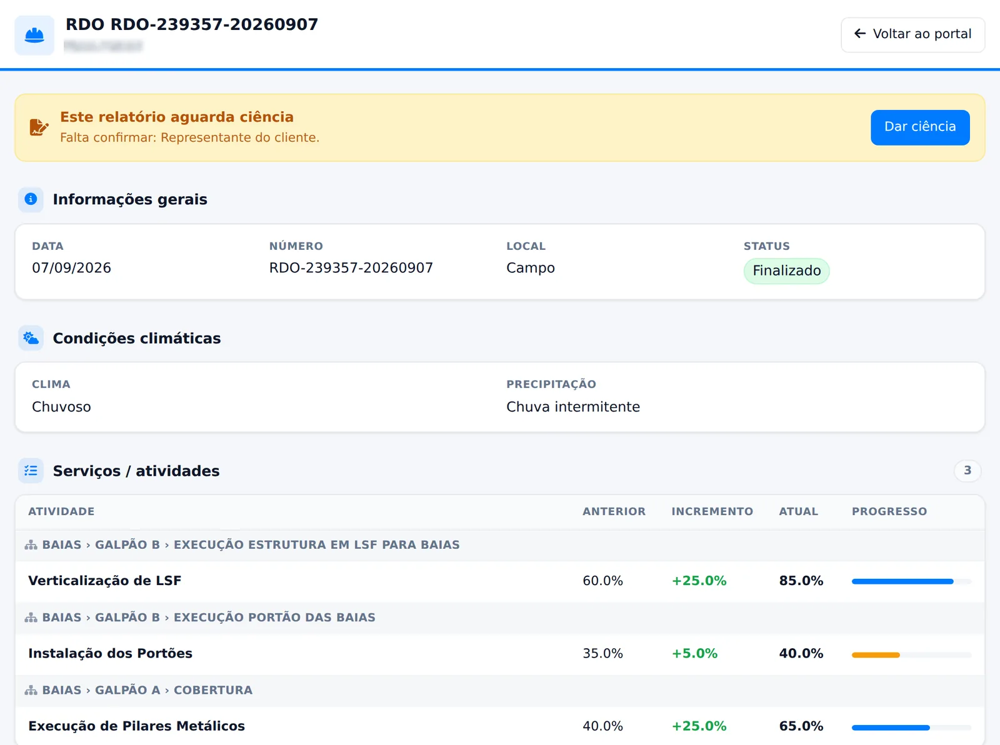
O diário como o cliente lê: clima, atividades que avançaram no dia (antes → depois) e o aviso de que falta a ciência.Para dar ciência, o representante marca o próprio nome e confirma com a senha, pedida só nesse momento.
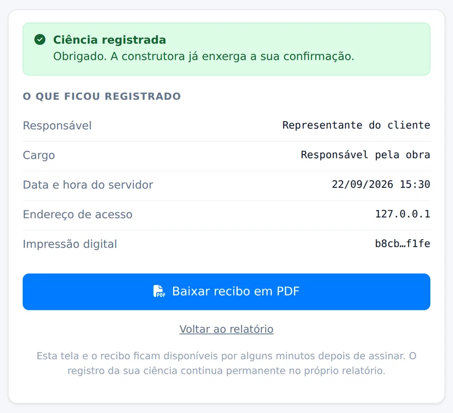
O recibo: quem confirmou, quando, de onde e a impressão digital do conteúdo. Ciência feita na cópia de teste — por isso o endereço é o do próprio computador.
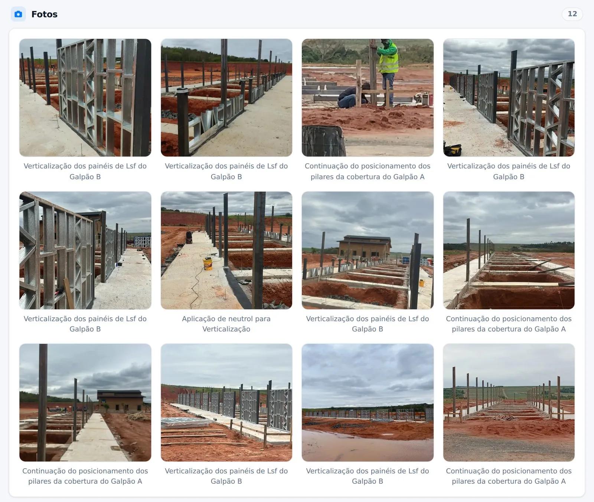
As 12 fotos do diário de 07/09, com as legendas da própria equipe: painéis de LSF verticalizados no galpão B, pilares da cobertura no galpão A.
Em uso numa empresa de LSF
A primeira versão nasceu dentro de uma empresa de estruturas, durante o estágio comercial; a versão atual foi construída de maio a setembro de 2026 e está em uso numa empresa de Light Steel Frame. Idealizei, defini as regras e conferi cada entrega; o código foi escrito com um assistente de programação com IA sob a minha direção. O software é meu e está licenciado para quem o usa; os dados de cada empresa são dela. 6 áreas, manual de 17 capítulos e 4 guias passo a passo (3 ilustrados) para a equipe.
Proposta→Obra→Cronograma→Diário→Medição→Cobrança→Caixa→Portal do cliente
Como isso se traduziu no dia a dia
01
O diário que estava no WhatsApp
+
Resultado
Sem 23 dias de diário que ficaram só no WhatsApp, o portal mostrava a obra com 27,6% concluído. Com eles lançados — numa cópia do sistema com os dados reais —, o mesmo portal mostra 44,7%, com 65 diários e 378 fotos — contra 60,8% planejado para 07/09. A obra estava atrasada, mas bem menos do que os 27,6% faziam parecer; sem o registro, nem o tamanho do atraso era confiável. E o sistema ganhou uma ferramenta permanente: importar de uma vez diários e fotos que ficaram de fora, sempre com ensaio antes de gravar.
O problema
Numa obra de galpões, o sistema tinha 42 diários lançados até 11/08. Dali em diante, nada. O encarregado garantia que os diários estavam "devidamente atualizados" — e estavam, mas no grupo de WhatsApp, não no sistema. Com isso, 28 atividades já concluídas apareciam como atrasadas. Quem olhasse o sistema veria uma obra parada; quem estivesse no canteiro via o serviço avançando.
O que fiz
Li as mensagens e fotos do grupo dia a dia e montei uma carga de recuperação: 23 diários, 185 fotos e 72 registros de avanço em 23 atividades. Cada percentual ganhou uma justificativa escrita, apoiada no que a mensagem do dia dizia, num relatório que o gestor pode conferir. A carga passa por um ensaio que mostra tudo o que seria criado sem gravar nada — e se recusa a desfazer um avanço já lançado.
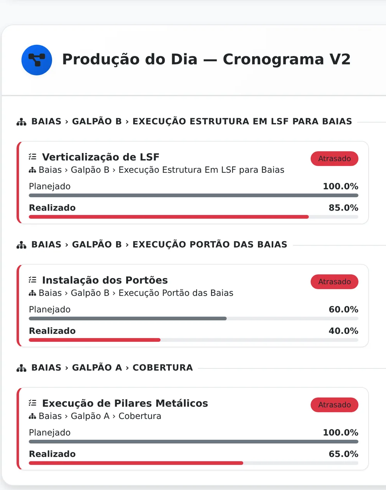
O diário de 07/09, um dos 23 recuperados: para cada atividade, o planejado e o feito — e o aviso de atraso no dia em que acontece.
Sistema não muda hábito sozinho: a ferramenta existia e a equipe seguiu no WhatsApp por 23 dias. Além do código, fiz a carga de recuperação, a norma escrita do diário e o combinado com os encarregados.
02
O cliente confirma que leu
+
Resultado
A confirmação de leitura virou registro: quem, quando, de onde e sobre qual conteúdo, com recibo em PDF — e, se o diário mudar depois, a ciência aparece como "alterado". A ciência mostrada neste site foi feita na cópia do sistema, com um cadastro de exemplo.
O problema
O diário de obra só serve de registro se o cliente confirmar que o leu — e essa confirmação costuma se perder numa conversa. "O cliente viu?" Ninguém sabe provar.
O que fiz
Dei ao representante do cliente uma senha só dele, que vale apenas para aquela obra. Para dar ciência num diário, marca o próprio nome e confirma com a senha. O sistema grava quem confirmou, a data e a hora do servidor, o endereço de onde a pessoa acessou e uma impressão digital do conteúdo do diário. Se alguém alterar o diário depois, a confirmação passa a aparecer como "alterado" — o sistema não esconde a mudança. Na hora, o cliente recebe um recibo, que pode baixar em PDF.
Como ficou para quem usa
A construtora liga o portal na tela da obra e manda o link para o cliente.
O cliente abre o link, vê o andamento e o cronograma, e entra nos diários que quiser.
Para dar ciência, marca o próprio nome, digita a senha e recebe o recibo.
A construtora vê, diário por diário, quem já deu ciência e quem falta.
Se o cliente esquecer a senha, pede uma nova pelo próprio portal, e a construtora gera uma senha provisória.
A senha é pedida só na hora de dar ciência; para ler os diários, o link basta.
03
Da venda à obra
+
Resultado
Aprovar a proposta abre a obra numa só ação, com cliente, itens a medir e custos previstos — sem recadastro. O cronograma vem junto quando já foi revisado; senão, o gestor o confere na primeira abertura.
O problema
A venda fechada costumava ser o começo de um retrabalho: cliente, itens do contrato e cronograma que já estavam na proposta precisavam ser cadastrados de novo em outros controles. Um item esquecido ou um valor trocado só aparecia meses depois, quando a cobrança não batia com o contrato.
O que fiz
Liguei a aprovação da proposta à abertura da obra. O cliente não é cadastrado de novo — o sistema reaproveita o que já existe. Os itens a medir e os custos previstos nascem prontos. Se o cronograma ainda não foi revisado, a obra abre pedindo conferência ao gestor em vez de nascer com um plano em que ninguém confia. Em seguida, a obra é entregue formalmente a quem vai executar, com dossiê.
Como ficou para quem usa
O cliente aprova a proposta pelo link que recebeu.
A obra aparece aberta, com cliente, itens a medir e custos previstos.
O gestor confere o cronograma na primeira abertura, se necessário.
A obra é entregue ao responsável pela execução, com o dossiê do que foi vendido.
Cada dado é cadastrado uma vez, onde o fato acontece; cronograma não revisado não passa adiante sem a conferência do gestor.
04
Compras com governança
+
Resultado
Onde o controle está ligado, cada compra responde às três perguntas: quem pediu, quem autorizou e o que chegou. A conta a pagar nasce do recebimento conferido.
O problema
Compras de obra combinadas por mensagem, sem registro de quem aprovou nem comparação de preços. Ficava difícil responder três perguntas simples sobre qualquer gasto: quem pediu, quem autorizou e o que realmente chegou ao canteiro.
O que fiz
Desenhei um ciclo de 9 etapas, do pedido ao pagamento, em que cada compra mostra em que etapa está. Quem aprova depende do valor: o sistema avalia 4 condições para definir quantas aprovações o pedido precisa. As regras mais rígidas — trava contra compra fatiada, número mínimo de cotações por faixa e rito de emergência com 48 h para regularizar — são ligadas empresa por empresa. O recebimento conferido é o que dá entrada no estoque e gera a conta a pagar. A equipe ganhou um manual ilustrado de 22 passos.
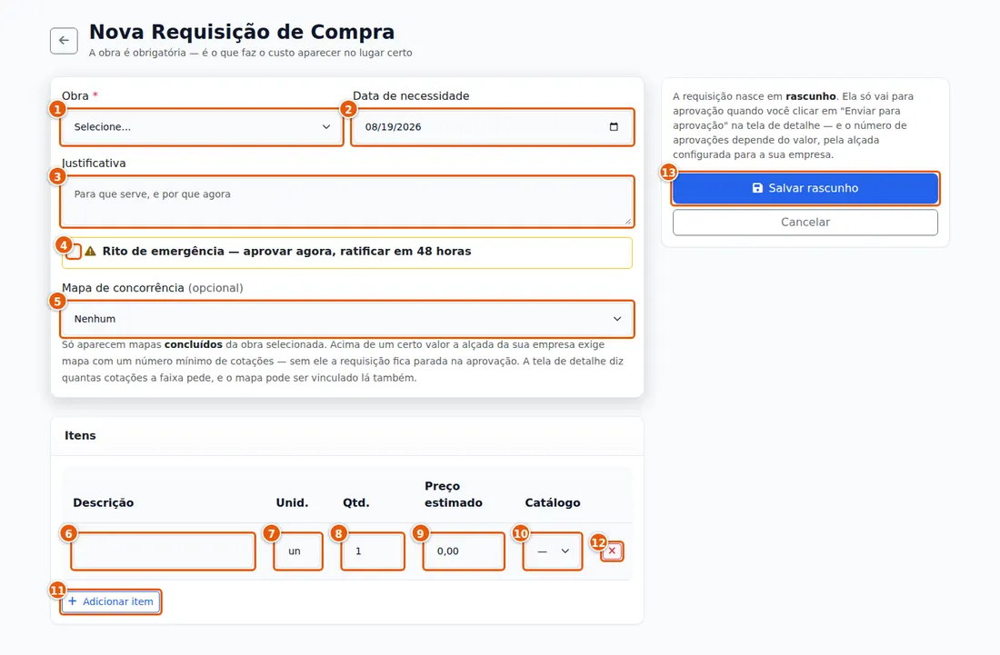
Requisição de compra — a tela como aparece no manual de 22 passos.
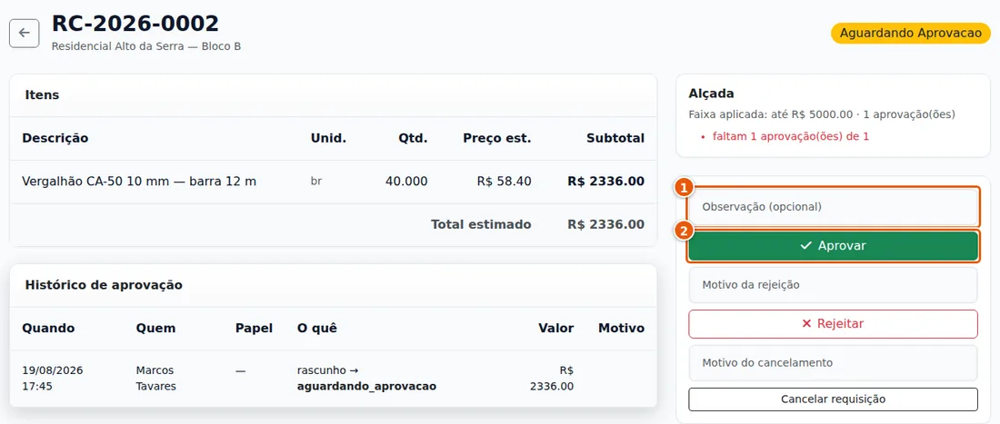
A alçada na tela: qual faixa de valor se aplica, quantas aprovações faltam e o histórico de quem mexeu. Dados de exemplo do manual.
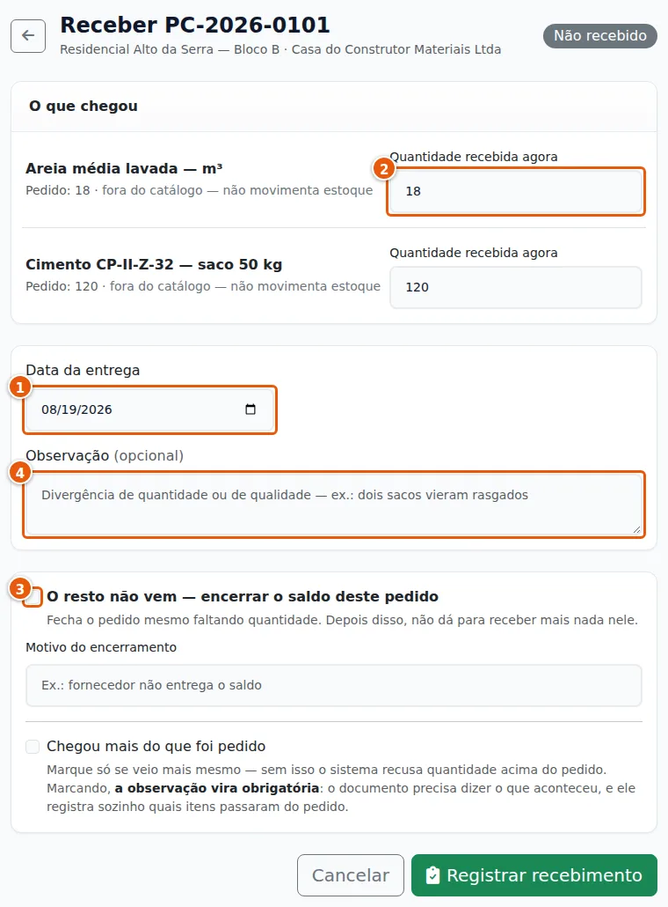
O recebimento conferido: o que chegou de fato, divergência por escrito, "o resto não vem" e "chegou mais do que o pedido" — sem isso, o sistema recusa.
Quatro papéis, um ciclo
Quem precisa, pede — obra, itens e justificativa; se urgente, usa o rito de emergência.
Quem responde pela obra, decide — aprova ou devolve para correção.
Quem compra, negocia — compara fornecedores no mapa e emite o pedido.
Quem paga, confere — recebimento e nota; o pagamento só libera quando os três batem.
Mudança que mexe com dinheiro não entra de uma vez para todo mundo: entrega-se por fases, com roteiro de volta atrás.
Ver as 6 áreas, o antes e depois em 8 temas e o que sustenta os números
Comercial
Funil de vendas em 8 etapas, catálogo de materiais com histórico de preços, orçamento com regra única de margem, proposta em PDF com versões e aprovação por link.
Obra
Abertura automática ao aprovar a proposta, cronograma interativo com linha de base, diário de obra com fotos e assinatura, medição a partir do avanço, portal do cliente com ciência e recibo. O percentual da obra é um número só — a média das atividades ponderada pela duração — igual no cronograma e no portal.
Compras e estoque
Pedido → cotação comparativa → aprovação por faixa de valor → recebimento conferido → nota → pagamento. Nove etapas, cada uma visível; as regras mais rígidas são ligadas empresa por empresa.
Pessoas
Escala semanal de equipes, ponto (com opção de reconhecimento facial), folha processada a partir do ponto, alimentação e reembolsos por obra.
Financeiro
Contas a pagar e receber, fluxo de caixa com classificação por regras que o usuário ensina, custo previsto × realizado por obra, contabilidade com balancete e DRE.
Administração
Várias empresas no mesmo sistema, 5 perfis de acesso no SIGE, painel de indicadores, manual embutido; avisos para fora do sistema dependem de ligar um serviço externo de envio.
O que mudou na operação
TemaAntesDepois, com o sistema
ClientePede notícias por telefone, e o diário é lido sem confirmação.Um link próprio da obra, com andamento, cronograma e diários com foto; ciência do cliente com senha e recibo, e aviso de "alterado" se o diário mudar depois.
Diário de obraTexto e fotos no grupo de WhatsApp, sem ligação com o cronograma e sem valor de documento.Diário no sistema com clima, equipe, ocorrências e fotos; passa por envio, assinatura, aprovação e ciência do cliente; vira PDF.
Venda → obraCliente, itens e cronograma recadastrados em outros controles a cada venda fechada.Aprovar a proposta cria a obra com cliente, itens a medir e custos previstos, numa só ação.
ComprasCombinadas por mensagem, sem registro de quem aprovou nem comparação formal de preços.Pedido, mapa comparativo de fornecedores e aprovador definido pelo valor. Trava contra compra fatiada para fugir da alçada, onde a empresa ligou.
Conta a pagarNascia no pedido, mesmo sem o material ter chegado.Nasce do que foi recebido e conferido no canteiro, com o controle de compras ligado.
Fluxo de caixaCada lançamento da planilha classificado à mão, todo mês.Classificação por regras que o usuário ensina; só os casos duvidosos vão para uma fila, agrupados por fornecedor.
MediçãoCalculada à mão em planilha, com levantamento à parte.Calculada a partir do avanço já lançado nos diários, com fechamento, aprovação, PDF e cobrança gerada.
ConhecimentoRegras "de cabeça", diferentes para cada pessoa.Manual embutido e normas escritas de preenchimento do diário e de revisão do cronograma.
O que sustenta os números
No SIGE, 3.343 verificações automáticas passaram sem falha na última rodada completa registrada (04/09/2026) — cada uma simula um uso e confere o resultado. Numa revisão geral, 114 problemas foram catalogados e atacados em seis frentes de correção, entre eles erros de dinheiro que passariam despercebidos: um campo que multiplicava o valor de um contrato por 100, uma folha que dobraria o valor a pagar se reprocessada, relatórios contábeis que não fechavam entre si.
Toda mudança arriscada é ligada empresa por empresa, com roteiro de volta atrás.
Medido e pendente
O que está medido — e o que ainda falta
Medido
65 diários, 378 fotos, 109 etapas e os 27,6% → 44,7% foram lidos em 22/09/2026 numa cópia do sistema com os dados reais da obra, exportados em 08/09, com a carga dos 23 dias aplicada.
Os 60,8% planejados para 07/09 saem do cronograma da própria obra, com 109 atividades ligadas entre si.
A carga de recuperação passou pelo ensaio sem pendências: 23 diários, 185 fotos e 72 registros de avanço, cada um com justificativa escrita.
O percentual da obra é o mesmo número na tela do cronograma e no portal.
Ainda falta
Aplicar a carga dos 23 dias no sistema em uso — em 08/09 constava como pendente.
O aceite dos encarregados à norma escrita do diário ainda estava em aberto no último registro.
Não há medição de tempo economizado nem de ligações a menos; o que parece ganho é estimativa.
A obra ainda não tem medição lançada no sistema — por isso o portal mostra 0 medições.
A ciência mostrada foi feita na cópia de teste, com um cadastro de exemplo.
Estudei 3 famílias de casas modulares e registrei 37 decisões.
Na VEKS, conduzi o estudo de uma linha de casas modulares em Light Steel Frame: fabricadas no galpão, transportadas de caminhão e instaladas prontas no terreno.
fábrica3 viagens · 37 decisõesterreno
O problema
A empresa já construía em LSF no local. O estudo mediu o que fabricar o máximo no galpão e entregar a casa pronta exigia em transporte, estrutura, junções e preço.
O que fiz
Projetei, orcei e fiz a proposta, com a conta antes do desenho: gabarito de transporte, pé-direito e circulações de norma, inclinação de telha, içamento. Cada layout passou por um validador de colisões e envelope antes de ser desenhado.
Resultado
Três famílias de produto, o B-36 projetado, orçado e com proposta, até a ficha técnica comercial, 37 decisões registradas e um plano de 8 semanas com critério go/no-go para abrir vendas.
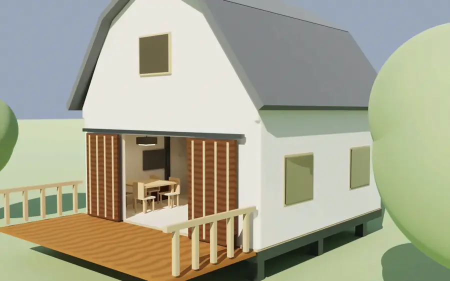
3,8 tCada caixa sai pronta da fábrica.
Maquete · o B-36 chega em duas caixas com a junção aberta; o telhado vem deitado, é montado no chão e sobe inteiro — três viagens
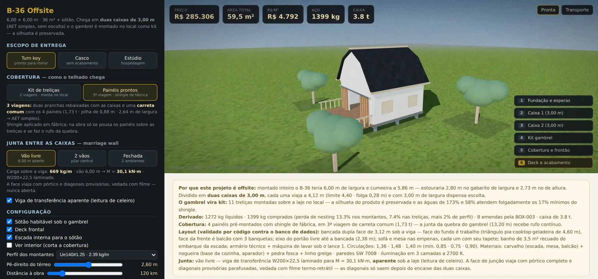
Configurador do B-36 · cada opção da barra lateral recalcula preço, aço e peso da caixa na hora — e a vista de transporte mostra as duas caixasB-36 · o celeiro 6 × 6 m não cabe inteiro no caminhão: vai em duas caixas
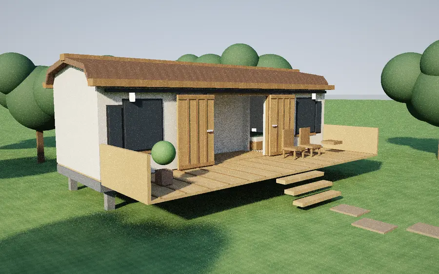
FL-30 · módulo pronto de 29 m² sobre chassi
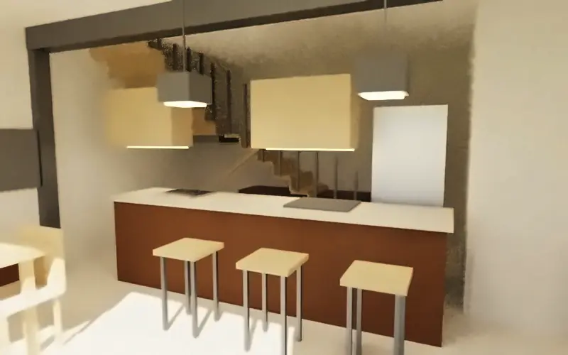
B-36 · a viga da junção ficou aparente — sai mais barato que fechar — e a bancada vai embaixo dela
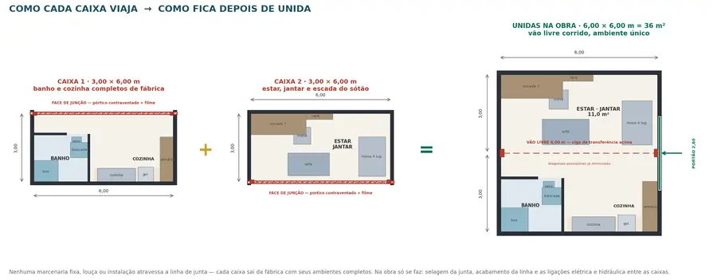
Como cada caixa viaja e onde fica a junção depois de unida
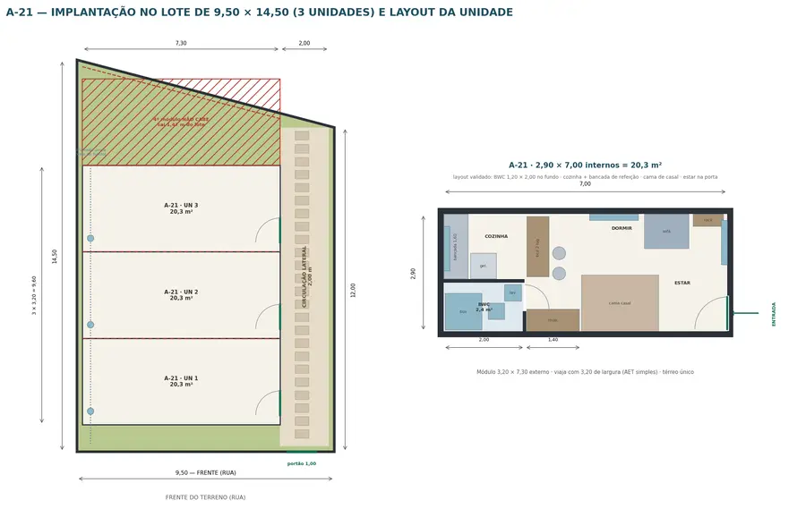
A-21 · implantação no lote de 9,50 m — cabem 3, não 4
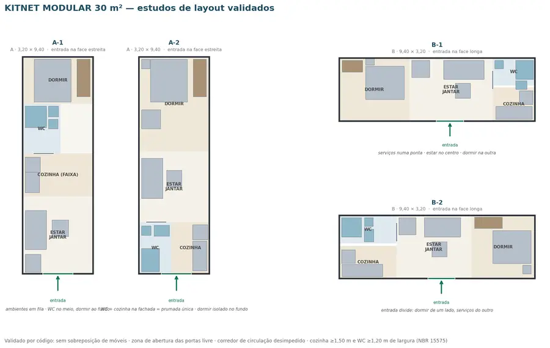
Kitnet modular 30 m² · cada layout passa pelo validador de colisões antes de ser desenhado
Onde o número mudou o projeto
01
O celeiro não cabe inteiro no caminhão
+
Resultado. O B-36 vai em duas caixas volumétricas com o térreo completo mais o telhado como kit, em três viagens — a terceira em carreta comum com autorização simples, não em prancha.
O B-36 montado estoura 2,73 m em altura e 2,80 m em largura para o transporte. Bipartido mantendo o telhado gambrel, nenhuma combinação atende transporte e inclinação mínima da telha ao mesmo tempo.
A junção entre as caixas virou um estudo à parte: comparei vão livre de 6 m, dois vãos com pilar e junta fechada. O vão livre com viga aparente saiu mais barato — fechar não economiza e o pilar não paga a viga. Girei o partido em 90° quando percebi que a junta atravessava o meio do portão.
Itens que sempre faltam no orçamento e passaram a ser regra: balancim de içamento, guindaste da classe certa, viga da junção e o mobiliário que aparece no render.
02
Geminar 4 unidades corta cerca de 28% do custo por unidade
+
Resultado. Geminar quatro unidades corta o custo por unidade em cerca de 28%; empilhar sozinho encarece. Isso definiu como o produto seria oferecido a investidores.
Para uma kitnet modular de 30 m², rodei os cenários isolado, em fita de 2 a 6 unidades e em 1 a 3 pavimentos. A fachada por unidade cai 56% ao geminar quatro. Empilhar sozinho não barateia — só densifica.
A escada coletiva levou quatro iterações: a escada reta empilhada não conecta os pavimentos a partir do 7º degrau, e a torre em frente às portas tira a privacidade das unidades. Ficou uma torre lateral na empena cega entrando pela ponta da varanda.
No estudo de retorno para investidor, o rendimento líquido ficou abaixo da taxa básica. Registrei que o argumento de venda é prazo de obra, não retorno — e que divulgar projeção como garantia é risco jurídico.
03
A planta do cliente não cabia no terreno dele
+
Resultado. Antes da obra, mostrei que no lote de 9,50 m cabem três módulos, não quatro — nem a planta que o próprio cliente trouxe cabia.
Um cliente trouxe planta com quatro kitnets de 7 × 3 m para um lote de 9,50 m de frente. Pelo gabarito, o módulo com paredes em LSF passa de 3,20 m e exigiria escolta; o nosso módulo padrão de 9,40 m não cabe na frente útil. Desenhei o A-21 (3,20 × 7,30 m) para esse lote — que é um tamanho muito comum.
Ao implantar, o fundo do lote é inclinado: quatro módulos não cabem em nenhuma posição, e a própria planta recebida estoura 1,97 m. Cabem três. O configurador passou a avisar em vermelho quando alguém tenta quatro.
A conta foi feita antes do desenho, e o limite do lote apareceu ainda no estudo.
Ver as três linhas de produto e a governança do lançamento
O ponto de partida. A empresa já construía em LSF no local. A pergunta era se dava para fabricar o máximo no galpão e entregar a casa pronta — e o que isso exigia em transporte, estrutura, junções e preço. Tratei como estudo de possibilidades: faixas e cenários, sem travar dimensões antes de fazer a conta.
A regra do trabalho. Nunca declarar que algo cabe ou está conforme sem ter feito a conta e mostrado o número. Limites de transporte (4,40 m de altura, 3,20 m de largura sem escolta), pé-direito e circulações mínimas de norma, inclinação mínima de cada telha, içamento — tudo virou verificação antes do desenho. Cada layout interno passou por um validador de colisões, envelope e altura livre antes de ser desenhado.
Cabanas A-frame
Catálogo triangular em LSF com configurador de orçamento em 3D: grupos de serviço, referência de custo pública, modos turn key, kit e personalizado, escala humana no modelo.
Módulos P1–P4 e FL-30
Família de módulos prontos sobre chassi. Manual de fabricação, transporte e montagem, roteiro do pedido à entrega e caderno de junções em 3 vistas + perspectiva.
Celeiros B-36 · B-96 · B-120
Linha barndominium com telhado gambrel. B-36 aprofundado até projeto estrutural completo, orçamento, proposta, ficha técnica comercial e protocolo de ensaios do protótipo.
Governança do lançamento. Conduzi 10 rodadas de análise crítica do B-36 — cálculo, fabricação, compras, logística, comercial, marketing, jurídico, qualidade, financeiro e riscos — consolidadas em 37 decisões registradas e um plano de ações de 8 semanas, com o protótipo-vitrine como evento central e critério go/no-go de quatro condições para abrir vendas.
Papelada pronta para operar. Guia geral do programa, ficha técnica comercial, minutas de contrato de fornecimento de kit e de empreitada, termo de responsabilidade do terreno, termo de entrega com checklist e garantias, protocolo de ensaios do protótipo, termo de escopo do projeto estrutural e carta-convite de cotação para fornecedores de perfis.
Folha 05/08Obra e projetosVEKS · Mar–Set/2026
6 meses em orçamento, compras, obra e financeiro
Seis meses numa empresa de Light Steel Frame em São José dos Campos, atuando ao mesmo tempo em orçamento, compras, acompanhamento de obra e controle financeiro. Além dos casos acima, uma seleção do que passou pelas minhas mãos.
planilha6 mesescanteiro
Obra · Itu/SP Baias para bovinos
Dois galpões e 22 baias numa fazenda
Suporte à obra do início ao fim: requisições de material para caixaria, concretagem de brocas, vigas e calçadas; especificação de concreto conforme norma; cotações e quadro de concorrência para argamassa, bombeamento e pisos; projeto 3D dos portões em madeira, com manual de montagem e lista de materiais para o carpinteiro; contrato de locação da casa da equipe revisado; aditivos de escopo (reforço de fundação e acabamentos hidráulicos).
requisiçõescotaçõesquadro de concorrênciaaditivosdetalhamento 3Despecificação de concreto
Produto · Conversão
Mercado autônomo 24 h como módulo LSF
Conversão de um mercadinho autônomo em contêiner (3 × 3 × 2,50 m) para módulo LSF off-site. Configurador 3D com orçamento editável em duas versões para o cliente comparar — só a casca, comparável ao contêiner, ou a loja pronta. Repreçamento com a base real da loja de materiais, cotação dos itens sem preço e levantamento de concorrência para posicionar o produto.
orçamentoprecificaçãoconcorrênciaconfigurador 3D
Projeto · Orçamento
Galpão comercial 15 × 20 m em São José dos Campos
Proposta de 14 seções na planilha padrão da empresa, com correção de fórmulas e revisão dos cenários de mão de obra. Cotação e acompanhamento da sondagem SPT; com o laudo em mãos, pré-dimensionamento estrutural e de fundação (pórticos em perfil W, estacas escavadas apoiadas na argila rija), entregue em caderno de 7 pranchas: fundações, estrutura, vistas, isométrico, lista de materiais, plano de execução e renders.
Ver mais três: suíte em Campos do Jordão, contratos, auditório
Orçamento · Suíte
Suíte de 38 m² em LSF, Campos do Jordão
Orçamento montado na arquitetura da planilha padrão, reproduzindo a memória de cálculo de cada item (medida → insumos → embalagens → R$/m²). Identifiquei e corrigi premissas erradas de paredes internas e de fundação que distorciam o custo.
orçamentomemória de cálculorevisão de premissas
Contratos
Contratos de empreitada e de mão de obra
Revisão de contrato de empreitada global para ampliação em LSF; redação de contrato de mão de obra para base coat e telhado shingle (1.800 m²), com entrada de mobilização, medição mensal e divisão clara de responsabilidades; revisão de cláusulas de locação.
contratoscondições de pagamentoresponsabilidades
Obra · Reforma
Auditório de instituto de pesquisa
Levantamento de escopo para orçamento de reforma de 75 m² em parceria com outras duas empresas: parede acústica, demolições, porta corta-fogo, forro e iluminação dimerizável.
levantamento de escopoparcerias
Folha 06/08Ferramentas2025–2026
4 ferramentas feitas de contas que se repetiam
Quando a mesma conta aparecia pela terceira vez, eu a transformava numa ferramenta para o time inteiro.
3ª veza mesma conta vira ferramentatime inteiro
Vendas · Loja
Calculadora de parede em LSF e drywall
Ferramenta usada pelo vendedor da loja de materiais e pela engenharia: desenha a parede, mostra em 3D, gera plano de corte dos perfis e quantitativo com preços da loja. Escolhe escopo (material, mão de obra ou ambos), calcula a diária de equipe conforme o tamanho do serviço, decide se compensa comprar parafuso por milheiro ou por centena e exporta o orçamento em PDF com a marca da loja. Os perfis aparecem como "guia" e "montante", porque vendedor e comprador não entendem código de perfil.
quantitativoplano de corteprecificaçãoPDF para cliente
Controladoria
Classificador do fluxo de caixa e painéis de controladoria
Motor que lê a planilha de entradas e saídas, exclui transferências internas, classifica cada lançamento por regras, separa o que é obra do que é empresa e rateia o custo indireto do escritório. Gera painéis mensais e por centro de custo, com todos os lançamentos pesquisáveis. Revelou problemas de cadastro na origem — receita sem obra vinculada, centro de custo trocado — que passaram a ser corrigidos na fonte.
fluxo de caixacentros de custorateiopainéis
Documentos
Padrão de documentos PDF da empresa
Kit de layout para propostas, cronogramas físicos e relatórios saírem sempre com a mesma identidade — inclusive versão com a marca do cliente quando o documento é emitido em nome dele. Manual ilustrado da planilha padrão de orçamento, aba por aba, a partir do treinamento gravado com o diretor.
padronizaçãomanuaisidentidade visual
Processo
Fluxo de compras da construtora
Desenho do ciclo ideal de compras — campo solicita, compras monta o mapa de concorrência, gestor aprova, financeiro paga e lança — que virou a espinha dorsal do módulo de compras do SIGE.
Meço no projeto, orço na planilha da empresa e entrego a proposta no seu modelo.
Compras com cotação e quadro de concorrência
Requisição, cotações, quadro de concorrência e conferência do que chegou ao canteiro.
Cronograma, diário, medição e portal do cliente
Diário que move o cronograma e calcula a medição, com norma escrita para quem preenche; o cliente acompanha pelo link e confirma que leu.
Fluxo de caixa e custo previsto × realizado
Lançamentos classificados por regra, obra separada de escritório, custo por centro de custo.
Como trabalho
Ensaio antes de gravar
A carga mostra tudo o que criaria sem gravar nada; só depois grava.
Norma escrita para quem preenche
Sistema não muda hábito sozinho. O combinado com quem preenche vai por escrito.
Mudança em dinheiro entra por fases
Nunca de uma vez para todos: empresa por empresa, com roteiro de volta atrás.
Gasto, venda ou promessa: quem assina decide
Com o número das duas alternativas na mão. Eu recomendo; quem assina decide.
Experiência
mar/2026 – set/2026 · PJ, contrato de 6 meses cumprido até o fimVEKS Engenharia — São José dos Campos/SP
Contratado para processos, dados, automação e implantação do SIGE (em uso na empresa); na prática, também orçamentos e propostas, compras e cotações de obra, acompanhamento de canteiro, contratos, fluxo de caixa e o desenvolvimento da linha de casas modulares.
fev/2025 – jul/2026 · CLT, meio períodoV Alves Construção — São José dos Campos/SP
Gerente de produção e operações da construção civil: acompanhamento das obras, compras e rotina de produção. Meio período, em paralelo com o estágio abaixo — as duas jornadas somadas davam um expediente inteiro.
abr/2025 – mar/2026 · estágio comercial, meio períodoEstruturas do Vale — São José dos Campos/SP
Orçamentos e propostas comerciais a partir do projeto e vendas internas. Foi aqui que o SIGE nasceu, de ponto facial a diário de obra e almoxarifado, construídos sobre a rotina real da empresa.
2017 – hojeAnalista contábil — escritório da família
Folha de pagamento, emissão de notas e balancete fiscal. É de onde vem a intimidade com custo, imposto e fluxo de caixa que aparece nos orçamentos.
mar/2023 – dez/2024Diretor de Vendas — InLoco Jr. (empresa júnior da UNIFEI)
Prospecção de clientes, orçamento e gestão de equipe.
2022Fiscal financeiro — DCE UNIFEI
Gestão de documentos fiscais da entidade estudantil.
projetos próprios · sem dedicação de expedienteAxiom — sistemas personalizados e chatbots
Site institucional e desenvolvimento sob demanda para pequenas empresas.
Formação
7º semestreEngenharia Civil
Cruzeiro do Sul (EAD), após 6 semestres na UNIFEI, em Itajubá/MG.
3º semestre · em cursoSistemas de Informação — PUC (EAD)
Segunda graduação, em paralelo.
O que sei fazer
Orçamento de obraCompras e cotaçõesCronograma físico-financeiroDiário de obra e mediçãoFluxo de caixaLight Steel FramePré-dimensionamento estruturalContratos de obraMapeamento de processosSistemas de gestãoManuais e documentação
Você me manda o pacote de projeto. Eu devolvo três documentos — levantamento, orçamento com faixa e proposta no seu modelo — e a gente conversa sobre o resto. Procuro uma posição em gestão de obras, orçamento e controle de custos — ou em melhoria de processos numa construtora que queira tirar o controle da obra das planilhas soltas.
Sem custo. Devolvo em até 3 dias úteis. O pacote serve só para esse orçamento e é apagado depois.